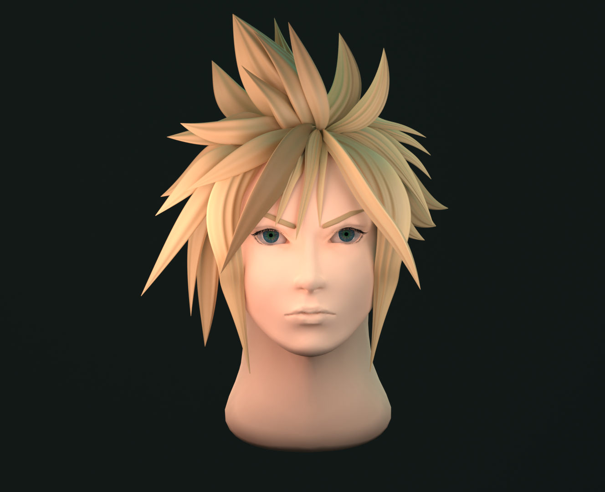
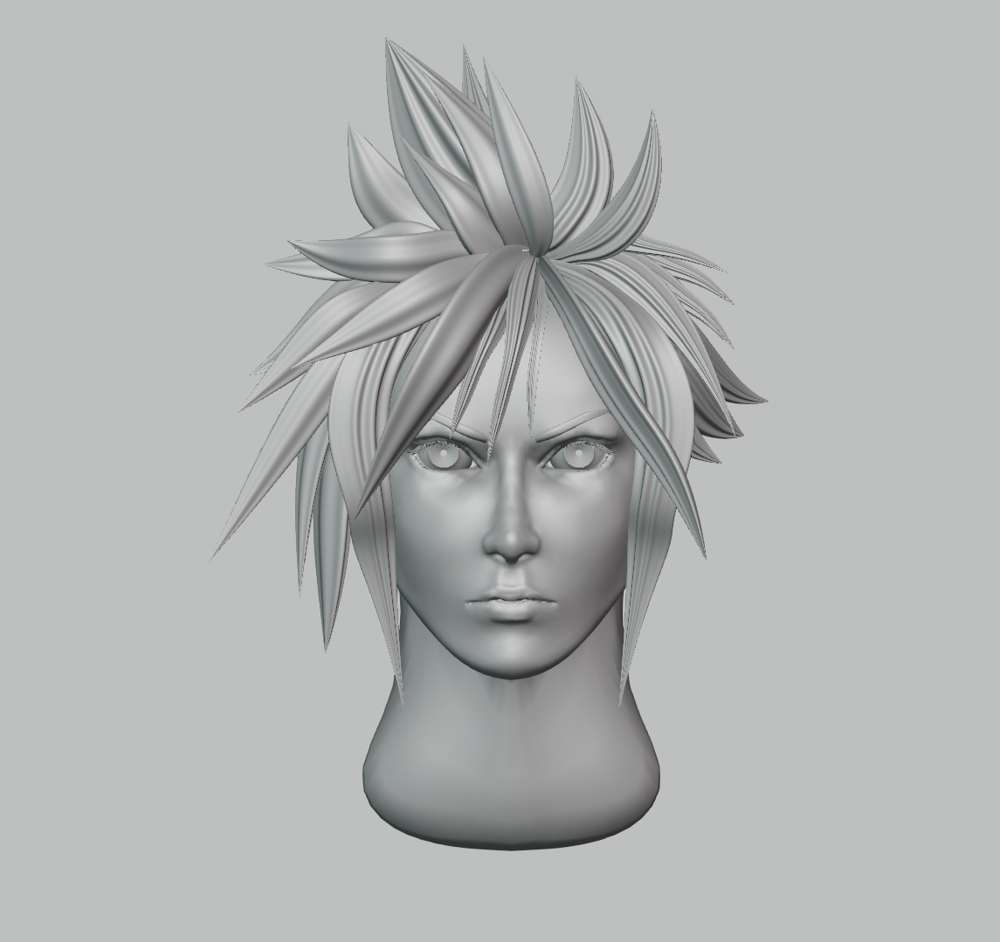
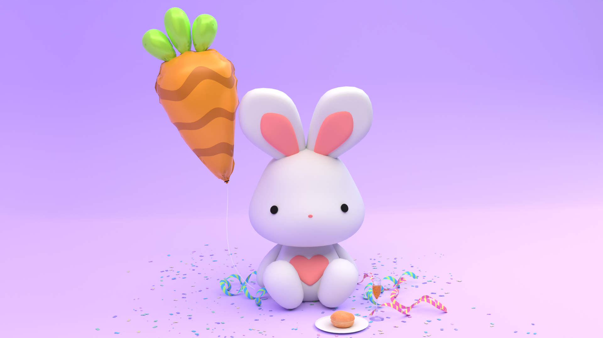
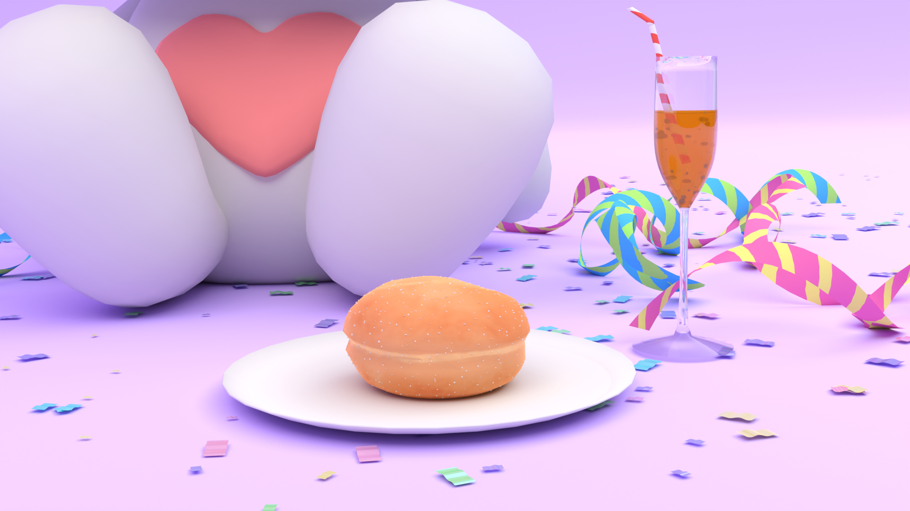
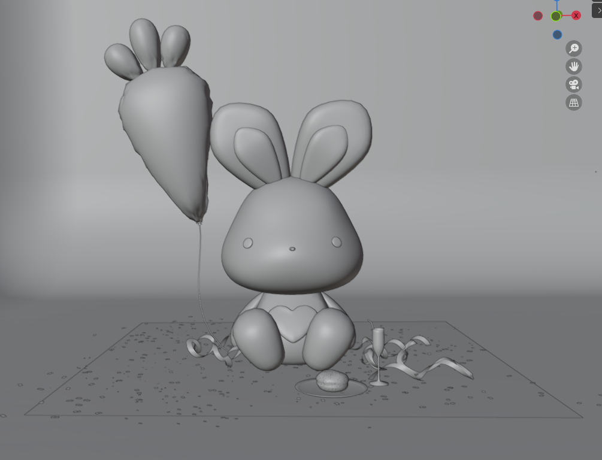

3D Models
Cloud Strife 2023
Tool: Blender
 The first touch in the world of sculpting out of one school course. This time victim was one of my favorite game characters Cloud Strife from Final Fantasy 7. I wanted to sculpt him but make it more simplistic for the sake of learning curve. Beside sculpting, I also wanted to practice lighting and stylised hair creation. Next step is retopology and making him look nice from other angles as well.
Celebration 2023
Tool: Blender
  Simple model of a bunny celebrating May Day or Vappu in Finnish. By now I have noticed holidays and other remarkable days often heavily inspiring me for some reason, and Vappu wasn't an exception.